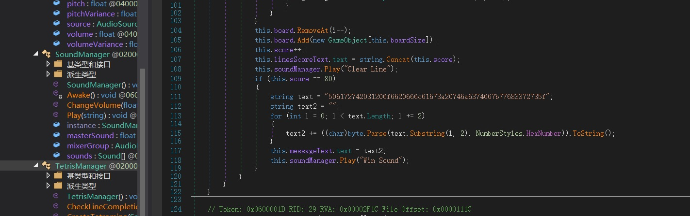
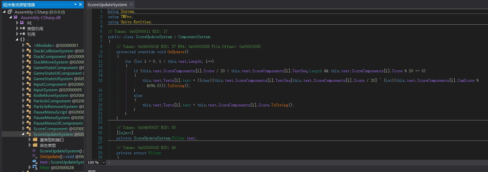
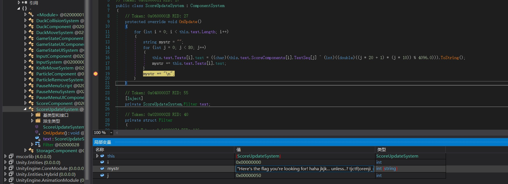

Difficult Decryption - 100 Point
¶题意
题目给出了 Alice 和 Bob 之间进行 Diffie-Hellman 密钥协商的过程。已知所用模数 Modulus 和相应原根 Base，并且已知 (Base ** A) % Modulus 和 (Base ** B) % Modulus 的值，给定密文 cipher = message ^ (pow((Base ** B % Modulus), A, modulus))（注意：这里的 “^” 表示异或运算），求解明文 plain = bytes.fromhex(hex(message)[2:])，题目给出的值如下：
Modulus: 491988559103692092263984889813697016406
Base: 5
Base ** A % Modulus: 232042342203461569340683568996607232345
Base ** B % Modulus: 76405255723702450233149901853450417505
cipher: 12259991521844666821961395299843462461536060465691388049371797540470
¶解答
由异或运算的基本性质可知，message = cipher ^ (pow((Base ** B % Modulus), A, Modulus))，故只需解出 A 即可。可以直接使用 SageMathCell 在线求解。
1 | ZmodN = Zmod(491988559103692092263984889813697016406) |
解得 A = 25222735067058727456，代入上式可知 message = 12259991521844666821961395299795867143478147128538917271758674534781
解得明文 plain = tjctf{Ali3ns_1iv3_am0ng_us!}
Gamer W - 60 Point
¶题意
题目给了一个用 Unity WebGL 制作的在线小游戏，题目提示为下载 Chrome 浏览器的 CETUS 插件，并通过作弊取得游戏胜利。
¶解答
CETUS 插件的用法和 Cheat Engine 类似。游戏需要修改攻击力才能击败最终 Boss（否则 Boss 回血比打掉的还多），Boss 丝血时玩家会被封住。这时可以把人物移速改得比较大，从而绕过障碍物的判定并击杀 Boss，然后就能得到 flag.
Gamer F - 80 Point
¶题意
题目给了一个用 Unity 制作的游戏，要求找出隐藏在其中的 flag.
¶解答
用 dnSpy 可以对 C# 代码进行反编译，用 AssetStudio（被 DMCA Takedown 之前叫 UnityStudio）可以拆包 Unity 的资源文件。
对本题而言，需要反编译的文件是 ./SnakeTris/SnakeTris_Data/Managed/Assembly-CSharp.dll，需要拆包的文件是 ./SnakeTris/SnakeTris_Data/level0
dnSpy 反编译的效果很好，图中的 16 进制数用 python 的 bytes.fromhex() 函数处理可以得到 flag 的第一部分。

用 AssetStudio 打开 level0，选择 Exports - All Assets 可以导出拆包后的资源文件，在 AudioChip 文件夹下可以找到 Victory Sound01/02.wav 文件，用英语/日语念了一遍 flag 的第二部分。
直接用文本编辑器打开 level0，可以看到有一个 string 是 flag 的第三部分。不清楚 AssetStudio 拆包时候会把 string 拆到什么位置，笔者没有找到。
Gamer R - 80 Point
¶题意
题目给了一个用 Unity 制作的游戏，要求找出隐藏在其中的 flag.
¶解答
还是用 dnSpy 拆包，可以找到打印 flag 的代码。但是笔者不知道用到的字符串是在哪里初始化的。

所以我们直接右键 - 编辑方法，把本来会一个字符一个字符打印出的 flag 存进字符串里（具体代码见下图），然后右键 - 添加断点。
要动态调试 Unity 游戏， 需要从 dnSpy 的 releases 里下载 Unity-debugging-2019.x.zip（具体选哪个依据游戏 .exe 文件属性中的文件版本决定），然后用相应版本（本题为unity-2019.1.2, win64）的 mono-2.0-bdwgc.dll 换掉游戏中 MonoBleedingEdge/EmbedRuntime 下的同名文件。
然后在dnSpy中点击保存（运行游戏并不会自动保存），并点击启动，选择 Unity 调试引擎，输入游戏可执行文件的路径开始调试，结果如下：

得到字符串："Here's the flag you're looking for! haha jkjk... unless..? tjctf{orenji_manggoe}"
Gamer M - 100 Point
¶题意
题目给了一个使用 nc p1.tjctf.org 8007 连接到的远程服务器及服务器的源代码 .py 文件，要求得到服务器上的 flag.
¶解答
可以看到源代码中的 shuffle 函数：
1 | def shuffle(s): |
并非完全随机。我们把这个函数单独拿出来实验，可以得到如果传入的列表有五个元素的话，原本的第 n 个元素最可能在第 n + 1 个返回（n 取 1, 2, 3, 4），剩下的元素就是原本的第一个元素。
可以写出如下脚本来重复进行 5000 次游戏并且保存结果：
1 | import socket |
然后用如下脚本处理游戏结果，获得出现次数：
1 | perlist = [{"t","6","0","R","{"},{"j","3","i","e","b"},{"c","n","4","o","5"},{"t","r","C","A","2"},{"f","F","x","J","}"}] |
然后应该就能分析出 flag，如果运气差，词频有问题，可以再执行一遍第一个脚本，接着来 5000 次游戏。